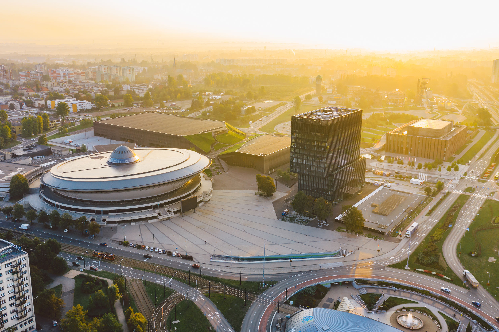

Pracownicy instytucji rynku pracy
Rozwijają kompetencje wykorzystywane w rozmowach doradczych, szkoleniach, spotkaniach informacyjnych i działaniach edukacyjnych.
Projekt rozwija kompetencje pracowników publicznych służb zatrudnienia, aby mogli pewniej wspierać dorosłych w zmianie zawodowej, edukacyjnej i cyfrowej.
Projekt jest realizowany w ramach programu Erasmus+, edycja 2025 - krótkoterminowe projekty na rzecz mobilności dorosłych osób uczących się i kadry w sektorze edukacji dorosłych KA122-ADU.
Doradca zawodowy jest często pierwszą osobą, z którą klient mierzy się w momencie zmiany. Jeżeli pracownik instytucji ma wątpliwości wobec nowych technologii, nowych narzędzi lub nowych sposobów uczenia się, klient szybko to odczuje.
Dlatego kierunek projektu jest konkretny: wzmacniamy pewność działania w świecie cyfrowym, a jednocześnie rozwijamy metody pracy z dorosłymi, które angażują i pomagają przejść przez proces zmiany kwalifikacji.

Śląsk przez lata funkcjonował w oparciu o stabilność, konkret i pracę o jasno określonych ramach. Transformacja w stronę gospodarki zielonej i cyfrowej zmienia ten model. Dotyka konkretnych osób, ich decyzji zawodowych i poczucia bezpieczeństwa.
W tej sytuacji rola instytucji rynku pracy nie może ograniczać się do obsługi procedur. Potrzebne jest wsparcie, które pomaga zrozumieć zmianę i odnaleźć się w niej krok po kroku.
Projekt pozwala wyjść poza lokalną perspektywę, zobaczyć inne rozwiązania i przełożyć je na realia pracy w regionie.
Korzyści z projektu wracają do instytucji na dwóch poziomach: bezpośrednio do uczestników mobilności oraz pośrednio do osób korzystających ze wsparcia urzędów pracy.
Rozwijają kompetencje wykorzystywane w rozmowach doradczych, szkoleniach, spotkaniach informacyjnych i działaniach edukacyjnych.
Korzystają z lepiej dobranych metod wsparcia, bardziej zrozumiałej komunikacji i narzędzi pomagających podejmować decyzje zawodowe.
Otrzymują nowe przykłady, materiały, scenariusze zajęć i doświadczenia możliwe do wykorzystania w codziennej pracy.
Mobilność jest praktycznym doświadczeniem edukacyjnym. Uczestnik pracuje w międzynarodowej grupie, testuje rozwiązania i uczy się poprzez działanie.
Uczestnicy współpracują z osobami z innych krajów i porównują sposoby działania w różnych instytucjach.
Zajęcia opierają się na ćwiczeniach, pracy zespołowej, analizie sytuacji i testowaniu rozwiązań.
Liczą się dyskusje, dzielenie się doświadczeniem i świadome wybieranie metod przydatnych po powrocie.
Sednem projektu jest udział w międzynarodowych szkoleniach zagranicznych. Uczestnicy pracują na przykładach, obserwują praktyki europejskich instytucji i zastanawiają się, jak dostosować je do własnego środowiska pracy.
Każdy z trzech tematów odpowiada na inny obszar zmiany: informację, relację i doświadczenie edukacyjne.